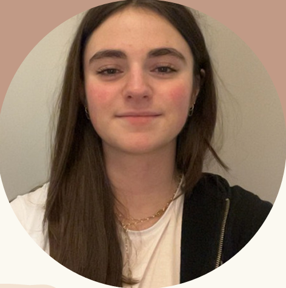

Trouver un stage
Je m'appelle Capucine Henniquaux, j'ai 15 ans et j'habite à Bois-Grenier. Je suis en classe de seconde au lycée La Salle à Lille. Je suis actuellement à la recherche d'un stage pour pouvoir découvrir un nouveau type de métier et pour en apprendre plus sur le monde du travail.
Années : 2021-2025
Années : 2024-2026
Appliquée, Autonome , Rigoureuse, Communicative, Curieuse, Minutieuse, Observatrice